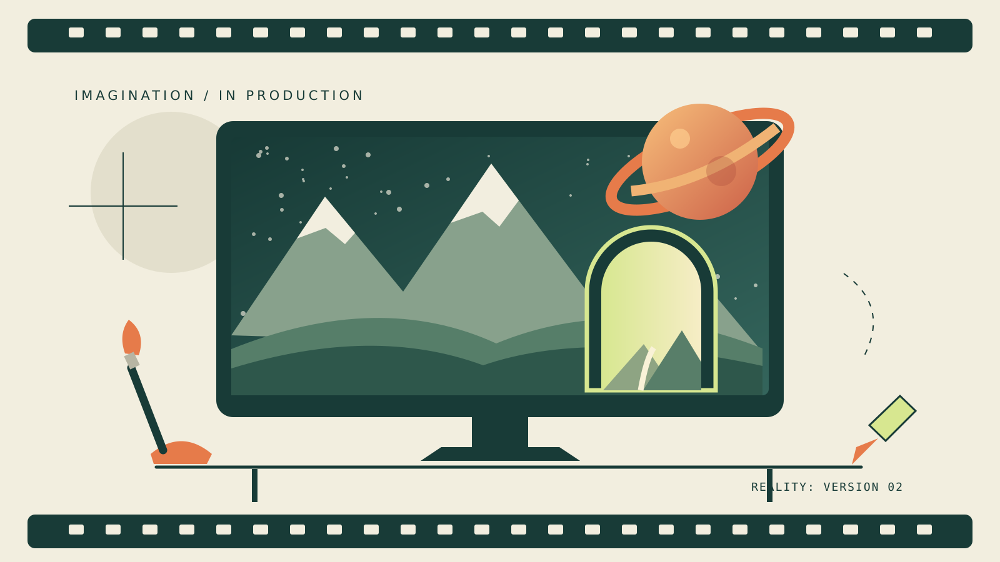

Who Is This Person?
I am Stephan Kozak, a visual effects supervisor, artist, principal investigator, and Master of Digital Media student. In ordinary language, I combine art and technology to bring imaginary things to life. In this completely reliable biography, I am the person called when reality needs a more interesting version.
Why should the internet care? Because a painting could become a living landscape, a comic could escape its panels, and a room could become an entire universe. I want to build experiences that make people feel something, then ask, "How did you do that?"

My Suspiciously Dramatic Origin Story
My story began with a simple question: "What if this picture could move?" Animation led to visual effects. Visual effects led to research. Research led to digital humans, augmented reality, immersive worlds, and a rapidly growing collection of projects.
Somewhere along the way, I discovered that a computer can create an entire universe but still crash because one file is in the wrong folder. This discovery gave me my greatest power: stubbornly trying again.
Now I am studying digital media at Toronto Metropolitan University and learning how to connect the worlds I imagine with the technology that makes them work. This week, even a reality architect must learn where to put a closing HTML tag.
Skills and Abilities
- World building: Turning sketches and ideas into environments people can explore.
- Visual effects: Making impossible things look as if someone filmed them.
- Creative investigation: Experimenting with AI, digital humans, and new ways of telling stories.
- Bringing art to life: Imagining paintings, books, and comics that move beyond their frames.
- Emergency problem solving: Finding another approach when technology has other plans.
Character Profile
Character class: Artist / Researcher / Reluctant Debugger
Special ability: Turning "Wouldn't it be cool if..." into a project.
Creativity: 99 / 100
Ability to stop adding ideas: 2 / 100
Current quest: Make the impossible feel personal.
Tools of the Trade
One of my interests is creating interactive worlds with Unreal Engine. It is a place where cinematic storytelling and real-time experiences can meet.
Ready for the information my official biography leaves out? Open the classified file.